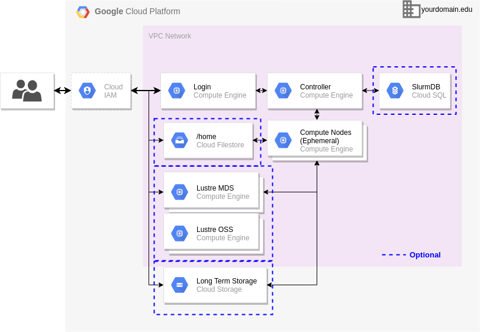
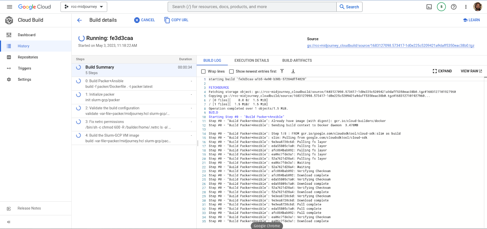
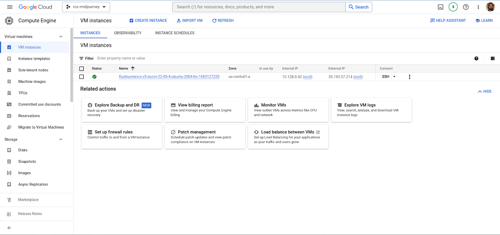

Last Updated: 2023-05-02
In this codelab, you will create a virtual machine image for the Research Computing Cluster (RCC) based on the CentOS 7 operating system. This image will be built using Google Cloud Build with Packer and Ansible. You will then use the created image to deploy a basic RCC, with a Slurm controller, login node, and an array of compute partitions. From here, you will log into the cluster and complete a system verification punchlist to ensure the cluster is operational.
By completing this codelab, you will learn about
Fluid Numerics' Research Computing Cluster (RCC) is a flexible and scalable cluster that runs on Google Cloud and has the look-and-feel of a traditional on-premise HPC cluster. It comes equipped with the Slurm workload manager and is able to be attached to a variety of file system types, including NFS, Lustre, GCS, and Wekafs.

The diagram above is an architecture diagram of Fluid Numerics RCC. It consists of a set of login nodes, a controller that hosts the Slurm workload manager, optional additional file systems, and an optional external Slurm database. Users are able to access the cluster through the login nodes using SSH; access is mediated by Identity and Access Management (IAM) on Google Cloud. To access the cluster, users must be assigned Compute OS Login and Service Account User roles on the same project the cluster is deployed to.
On the login node, users have access to Slurm commands that can be used to schedule and monitor interactive and batch jobs. The Slurm controller and database daemons run on the controller instance and are responsible for managing workloads submitted by users. Compute nodes are grouped into partitions in Slurm. Most often, we use partitions to create homogeneous groups of compute nodes. Having multiple partitions on the cluster allows users to have access to a variety of CPU types, GPU types, and compute node topologies.
All jobs run on compute nodes, which are most often set as ephemeral compute nodes. This means that the compute nodes are created only when jobs are submitted, and deprovisioned when they are idle for a period of time (default is five minutes). Jobs are submitted using Slurm's salloc, srun, or sbatch commands. When a job is submitted, the Slurm controller will assign the job to a compute node according to job parameters (e.g. partition, core count, GPU type, etc.).
The controller uses Slurm's powersave module to run a "resume" script that uses Google Compute Engine Bulk API to create compute nodes. Once initiated, the spinup process can take up to 5 minutes; nodes that do not come online in this period of time are marked down and often we need to triage the system to understand why this happened. After a job completes, the idle compute node will remain active for 5 minutes, so that jobs can run on-demand in during this time period. If no additional jobs are submitted in this time period, the Slurm powersave module runs a "suspend' script to delete the nodes from Google Compute Engine and places the nodes in a cloud state.
The home directory is mounted across all instances of the cluster. In the default configuration, the home directory is hosted by the controller, which is NFS mounted onto the login node(s) and compute node(s). When the cluster is shared by multiple users, this configuration is not ideal. When a user has a job with a heavy IO load to the home directory, the cluster can become sluggish if not unresponsive; this happens often because of bottlenecks associated with the disk IOPs or network bandwidth from the controller. To work around this, Fluid Numerics offers configurations with Google Filestore or WekaFS to host home directories.
When workloads are performing parallel file IO on large files, as is typically the case with computational fluid dynamics, molecular dynamics, and other grid or particle based solvers, the Lustre file system can help improve performance considerably. For Lustre, Fluid Numerics has an open-source Lustre solution that can be deployed alongside the cluster using Terraform. In some cases, customers will prefer a fully supported solution; here, we can rely on DDN's Lustre solution in the Google Cloud Marketplace. Often, Lustre is mounted to /scratch or /lustre on all nodes on the cluster.
The Slurm Database is a MySQL database that is, by default, hosted on the Slurm controller using MariaDB. Sometimes, customers would like for the Slurm job history to be persistent between system upgrades
"Image Baking" refers to the process of installing software and configuring the operating system on a virtual machine image so that it can later be deployed on compute hardware. On Google Cloud, we work with publicly available Google Compute Engine Virtual Machine Images as the "base image". For our purposes, the base image is identified by the operating system we want to work with.
Fluid Numerics RCC is based on the open source SchedMD/Slurm-GCP project; technically our builds are based on the FluidNumerics/Slurm-GCP fork of this repository, which has features and bug fixes incorporated that our customers have requested. The Slurm-GCP repository contains the Packer and Ansible files that are used to install Slurm and all of its dependencies. It also allows us to append our own Ansible playbooks so that we can install additional packages during the build process.
Packer files are written in the Hashicorp Configuration Language (HCL) and they provide a template for the image baking process. A template is concretized by specifying values for variables. For the RCC, the build template is defined in Slurm-GCP/packer/main.pkr.hcl and the associated variables are defined in Slurm-GCP/packer/variables.pkr.hcl
A specific build can be concretized by specifying values for the template variables in a pkvars.hcl file. An example pkvars.hcl file is provided with Slurm-GCP. Our RCC build uses fluidnumerics/fluidnumerics-rcc/packer/fluidnumerics.hcl. The fluidnumerics.hcl file is currently configured to use the CentOS 7 VM image as the base image and to use the ansible playbook under fluidnumerics-rcc/ansible/playbook.yml to install additional packages that we want to have on our cluster. This playbook specifies a list of scripts to run in the fluidnumerics-rcc/ansible/scripts directory.
If you have Packer, Ansible, and the gcloud CLI installed on your system, you can manually trigger a build of the VM images. In practice, however, we prefer to use Google Cloud Build, which allows us to define the steps necessary to build our image. The Cloud Build build pipeline is defined in the fluidnumerics-rcc/cloudbuild.yaml file. Each step in the build pipeline runs inside of a Docker container, which allows us to create a consistent build environment for every build, independent of who is running the build. This means that we have control over the versions of packer, ansible, and gcloud used to create the build; this is critical for debugging and problem solving as a team, when problems inevitably arise.
To bake the VM image, you will work in Google Cloud Shell, which already has the gcloud CLI installed and configured. For this build, you will manually trigger a build in Google Cloud Build.
fluid-cluster-dev using the gcloud CLIgcloud config set project fluid-cluster-dev
fluidnumerics-rcc repository in your cloud shell and navigate to the repository root directory.git clone git@github.com:FluidNumerics/fluidnumerics-rcc.git ~/fluidnumerics-rcc cd ~/fluidnumerics-rcc
git submodule init git submodule update
gcloud builds submit . --config=cloudbuild.yaml --project=fluid-cluster-dev --async
Once the build is submitted, it can take up to one hour for the build to finish. In the meantime, let's talk about some things you can monitor to track progress. First, you can navigate to the Cloud Build console using the products and services menu at https://console.cloud.google.com; make sure that your project is set to fluid-cluster-dev. Find your way to the build history and click on the active build that you just created. The page should look something like the screenshot shown below.

Recall that the Cloud Build build pipeline uses Packer and Ansible to create VM images. Under the hood, Packer will make the appropriate calls to the Google Compute Engine API to provision a virtual machine; you may see information in the Cloud Build logs that indicate this. Once the VM is created, Packer will establish an SSH connection with the VM and Ansible is then used to run each Ansible playbook and associated scripts.
The benefit here is that Packer and Ansible will handle any errors in a convenient way; whenever an error occurs, the exit code will be sent back to Cloud Build and the VM will be deprovisioned safely. When a build finishes successfully, Packer will stop the VM, create a VM image and save it to Google Compute Engine, and then deprovision the instance.
Since we now know that Packer handles creates a virtual machine during the build process, you can also see what is happening in Google Compute Engine. Using the products and services menu, you can navigate to the Google Compute Engine page. Once there, you should see something similar to the image below.

The RCC and the associated infrastructure are deployed using Terraform infrastructure as code. The fluidnumerics-rcc/terraform/ subdirectory contains sample deployments that provide good starting points for different use-cases. In this tutorial, we will use the minimal/ configuration, which deploys the following resources
The /home directory and Slurm database are hosted on the controller. One partition is defined with 10x ephemeral c2-standard-16 instances.
cd ~/fluidnumerics-rcc/terraform/minimal
rcc.auto.tfvars file to set the project_id and source_image_project to fluid-cluster-dev and the source_image to the name of the image generated during the build. You can find the name of the image at the end of the Cloud Build build logs, or by navigating to the Compute Engine > Images page on the Google Cloud console.terraform init
terraform validate
terraform plan -out=tfplan
terraform apply. This process can take a few minutes to complete.terraform apply "tfplan"
Smoke-testing refers to the process of verifying the cluster performs to the desired specifications. At a bare minimum, the cluster needs to meet the following criteria
When additional software is installed on the VM images, we also want to run tests that verify the software is installed and operational; we won't be doing this check here.
In this section, we'll walk through a few things you will always check when deploying a new cluster. Note that if the author of this codelab has provided you access to a project, the likely engineered a problem you will encounter during these steps; refer to the Triage subsection for information on how to tackle these problems.
IP_ADDRESS with the external ip address of the login node.ssh IP_ADDRESS
df -h . For this simple deployment, you should see /home, /opt/apps, and /etc/munge mounted from the controller.$ df -h Filesystem Size Used Avail Use% Mounted on devtmpfs 7.3G 0 7.3G 0% /dev tmpfs 7.3G 0 7.3G 0% /dev/shm tmpfs 7.3G 8.6M 7.3G 1% /run tmpfs 7.3G 0 7.3G 0% /sys/fs/cgroup /dev/sda2 100G 38G 63G 38% / /dev/sda1 200M 12M 189M 6% /boot/efi demo-controller:/opt/apps 100G 38G 63G 38% /opt/apps demo-controller:/etc/munge 100G 38G 63G 38% /etc/munge demo-controller:/home 100G 38G 63G 38% /home tmpfs 1.5G 0 1.5G 0% /run/user/20000
sinfo Slurm command.$ sinfo PARTITION AVAIL TIMELIMIT NODES STATE NODELIST c216* up infinite 10 idle~ demo-c216-sm-[0-9]
$ module avail --------------------------------- /opt/apps/modulefiles ---------------------------------- openmpi/v4.1.x Use "module spider" to find all possible modules and extensions. Use "module keyword key1 key2 ..." to search for all possible modules matching any of the "keys".
srun to run a job step, which runs a single command on a compute node and returns; here, we'll just run hostname to return the name of the compute node. After submitting the command below, watch the Compute Engine UI page to see the compute node being created when the job is submitted. Keep in mind that it can take up to 5 minutes for the node to become active.$ srun -n1 hostname demo-c216-sm-0
In the event the compute node is not created or the job step does not run, you can now start triage.
The first thing you will do is note the symptoms of the problem and the steps to reproduce the issue. The "presenting symptoms" include any messages relayed to the user by the cluster immediately following the steps to reproduce. For example, if you ran srun -n1 hostname and the compute node failed to spin up, Slurm will provide some information about the node failure after a few minutes.
The next step is to seek out other symptoms that are presented in the cluster's log files. Logs for Slurm can be found on the controller instance of the cluster under /var/log/slurm . Because of this, it is best to log into the cluster's controller when performing triage for issues related to job submission/compute node failures. There are a few log files that may be of interest to you in your efforts to characterize the source of the issue
/var/log/slurm/resume.log - This is the "Resume log". When compute nodes are created to meet the job submission requirements, the /slurm/scripts/resume.py script is executed to create the correct number and type of compute nodes, using Google Compute Engine's Bulk API. Any issues with creating nodes will be likely reported in this log file. If you notice compute nodes are not being created at all in the compute engine console, this log file will most often point to the reason why./var/log/slurm/slurmctld.log - This is the "Controller Daemon log". If compute nodes are coming online but are failing to connect to the controller or the compute node Slurm daemons are failing to start, this log file will often indicate why./var/log/slurm/suspend.log - This is the "Suspend log". When compute nodes are idle for some time, they are deleted by running the /slurm/scripts/suspend.py script. Any issues with deprovisioning compute nodes will be found here./var/log/slurm/slurmdbd.log - This is the "Slurm Database log"/var/log/slurm/slurmsync.log - This is the "Slurm sync log". Slurm-GCP and the RCC support preemptible instances, which means that Google can reclaim these compute nodes at any time. When this happens, Slurm registers this as a node failure and the compute node is marked down. The /slurm/scripts/slurmsync.py script runs every minute (crontab) and checks for downed nodes that were preempted and re-idles them so that work can be rescheduled on those nodes. Any issues with jobs failing to be scheduled on preemptible instances will likely be linked to logs reported in this log file.To avoid incurring charges to your Google Cloud account for the resources used in this codelab:
cd ~/fluidnumerics-rcc/terraform/minimal
terraform destroy
In this codelab, you
We recommend the following reading to help you further develop your skills as an engineer and administrator of the RCC